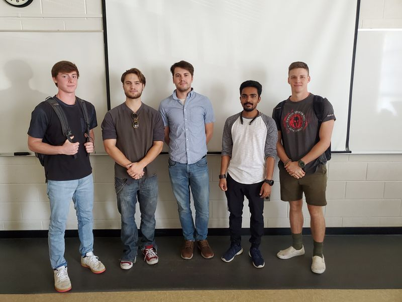
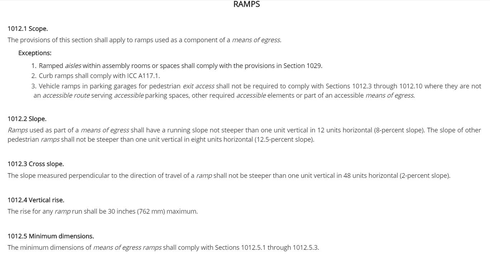
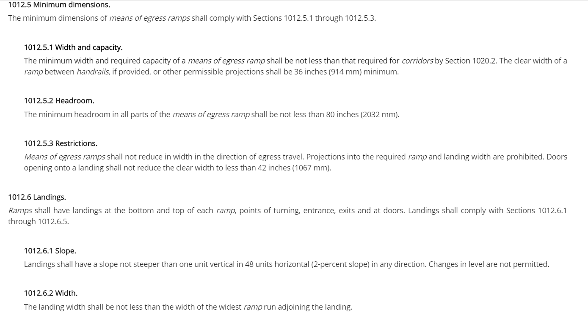
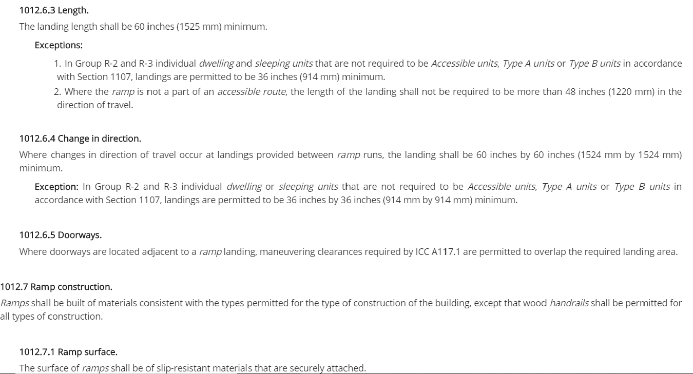
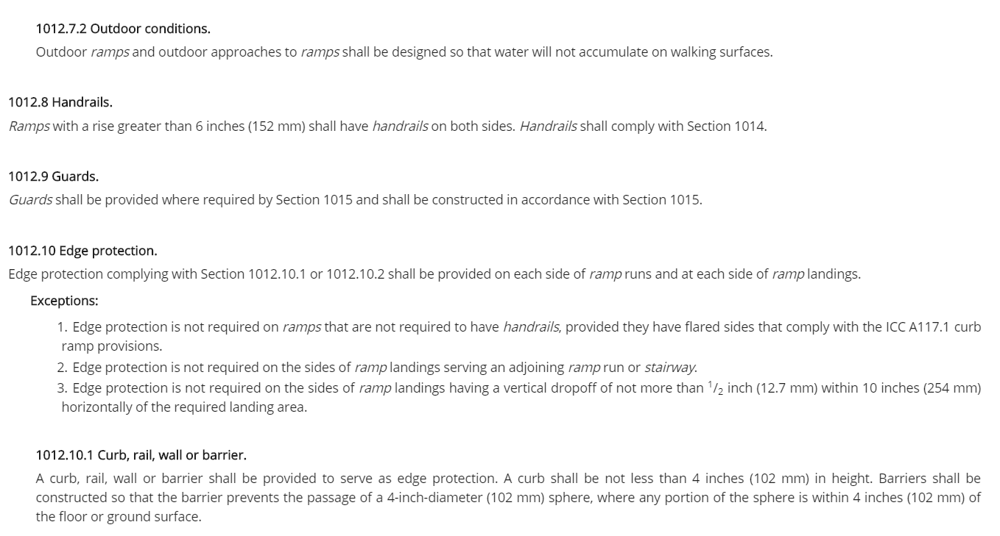

Playground access (ramp)
Abstract
Our client requested the design of a system to allow a child with motor disabilities to have access to an elevated platform with their classmates. The goal for this project, from our perspective, is to not only design a system to help the child in question but also allow other children with motor disabilities to use the system in the future. We approached this topic with the mindset of "simple is better" in regards to both budget and usage.
The wheelchair they are using
The ramp what they have
Stair they use to play and learn
Stair they use to play and learn
Team members
 Wade, Trenton, Michael, Dee, and Tucker
Problem Statement/overview of the need
The client requested a ramp or similar apparatus to allow children with abasia to access an elevated outdoor platform without the need to separate them from the class. To solve this issue, we must design a solution that is not only cost effective and weather-resistant but also meets both federal and state safety regulations.
Design Specifications
Due to federal constraints, we must maintain a 1"-12" rise-to-run ratio in order to maintain safety for any ramps involved in our system. Also, though we do not have the numerical data currently, there are legal restrictions on the shape of the steps themselves. We have designed several potential solutions that have the ability to maintain the given restrictions through dimensional adjustment once all numerical data is acquired.
Background research
We discovered that this issue is a very popular topic for discussion in the mechanical design industry. As such, there were many proposed solutions to our specific situation that could be utilized, such as ramps integrated with stairs, transformable steps, mechanical lifts, and specialized tires. Some of the major issue with many of these designs were the reliance on budget, a full adult-sized wheelchair and a large space for the product. We had none of these luxuries in our design constraints, therefore, we had to pool concepts from various designs to conceptualize a solution that fit our needs.
specialized tires
transformable steps
Conceptual Design
The struggle for this project was finding a solution that not only met the needs of the client but also had enough mechanical design to be appropriate for the spirit of the class. After researching other solutions and comparing them to our problem statement, we found several ways of tackling the issue that branched from two main creative philosophies; we could create a ramp system, or modify the wheelchair itself. After further research and deliberation, however, we concluded that modifying the wheels of the given wheelchair would not be an effective solution in the long term. Therefore, we narrowed our potential designs down to the three we felt met the following criterium: efficacy, integrity, economy, simplicity, and mechanical ingenuity.
Design Concept 1
- In this concept we have made a design of the stairs in the way that help this family to take the handicapped child to the playground using the same path with other normal kids. This design has simple stairs as every building has but to use the wheelchair on those stairs is very difficult. So, that we have made the design that we can convert those stairs in a ramp so that using a wheelchair on that path is easy. We can choose o make the ramp over there. But the family also want stairs so that other kids can learn how to use stairs. But they also want that this handicapped child uses the same way to go to the playground what other kids use. So we come up with the idea to make convertible stairs to ramp whenever we need ramp we can use it as a ramp and when we do not need we can make it stairs. We have to use the special case of a four-bar mechanism to make this design. It works like two crank mechanism as shown in the picture. This design just shows how the mechanism is going to work. This picture just shows the schematic of the model. It does not include all other accessories like locking on one position and link that help to access this mechanism etc.
Design Concept 1: Convertible stairs/ramp
Design Concept 2
A ramp that is designed to collapse into a casing and folded over a set of stairs.
Design Concept 2: Collapsible ramp
Design Concept 3
For our third design, we decided to approach the issue with the simplest solution: a ramp beside the stairs. With this solution in mind, we had the opportunity to shift our focus on designing a height-adjustable railing system that is federally required. Through discussion, we found that there are a plethora of locking mechanisms that could be utilized with varying ranges of complexity and stability. Due to how open-ended this solution is, coupled with how simple and easy it is to digest the concept, we decided to postpone further time investment into the design of this system until after professor recommendations.
Evaluate concepts/select candidate
Each of our concepts had a variety of benefits and detriments. Concept 1 has benefits of versatility, ingenuity, and portability, but the design would inherently have issues with stability, complexity, and weathering. Concept 2 has the benefits of simplicity, can be fully constructed from wood, and is low budget, but has the detriments of having to retract and extract the ramp every use, and the weight of the ramp itself may be cumbersome. Concept three has many of the same detriments as concept one, but maintains high stability on the ramp itself and is very easy to match to federal and state regulations.
Detailed Design
As a group we were required to approach this project in a different way then mo st of the other projects. This was for a small child named bear but also for other kids that came along with his same disability. So, we decided to go with the more rigid and basic design not only for that fact that it would give bear and others like him the functional ability they need, but also meet the requirements of the owners. The half stairs half ramp may not be as mechanically driven as we would have liked. But in the end it would have been whats best for the project and stand the test of time. The location of the project has a good width to it. So, it will be easy to go with a stair ramp hybrid with plenty with of space for kids to go up the stairs while handicap can go up the ramp together. It will be made mostly of wood and be something similar to the ramp on the other side so it matches with the building well. more measurements and in depth planning will be made with another visit.
Description of selected design
The design is as mentioned. A ramp stair hybrid; half of the decline will be stairs and the other half will be a ramp for the handicap with rails for support.The drop is about about 1 to 2ft in total so there will not be many steps but the ramp will be extended enough to meet the state regulations that apply. The design will be similar to the ramp on the other side of the porch in order to match rest of the building and not stand out. It will be made entirely out of wood and the project be put together rigidly enough in order to withstand the test of weather and time. Everything will be sanded and stained in order keep the project in good condition.
Detailed description of selected design
Analysis
We analyzed the design of our ramp through methods including structural, liability, and fatigue analysis.
Engineering analysis 1
The first way in which we chose to analyze the ramp was a liability analysis to meet regulation. For our design, we have chosen to mirror the ramp on the opposite side to maintain a uniform look and maintain state regulation. Subsequently, our ramp will be 10.583 feet long and 4.667 feet wide. The mandatory width of the stairs in reference to regulations is a minimum of 3 feet; both the ramp and stairs will accommodate for about a 1.27 ft drop. We must construct railing on either side of the ramp, and the landing must be at least a 5 ft square.
Engineering analysis 2
The second analysis we have chosen to perform is the structural analysis. While we have the needed ratios for structural shape, it is difficult to begin product design until the concrete is poured and leveled, as it could affect the shape of the structure. For the rest of our analysis we are operating under the current measurements that the porch height is approximately 1.27 feet, which would mean we need a length of 10.58 ft. If this number is incorrect, our dimensional analysis is easily adjusted. We will need a 2x4 crossbeam every 4 ft for stability, as well as longitudinal 2x4 beams overtop. We will have three sets of 3 vertical 2x4 supports along the length of the structure for load bearing. The ramp itself will be supported underneath by four 4x4 beams that run into either a concrete pad or are cemented into the ground, depending on whether the ground is paved. The railing will be supported by the 4x4 posts, and will have 2x4 rail handles and side plates on top. Finally, the railing will be further supported with 2x2 posts every 4 inches.    
Engineering analysis 3
This is the final analysis and will examine the fatigue and duration each component is expected to last. Due to the outdoor location of the ramp, we have chosen treated wood and coated decking screws for each component, which can last over 40 years. The majority of the weight will be supported by 3 vertical 2x4s, which have a maximum load bearing of 1,000 lbs each, far more than would ever be held by the ramp. However to absolutely ensure structural stability, we will be adding vertical 2x4 cross struts every 4 ft, further strengthening to already 3,000 lb max load. The result is a structurally sound ramp that will last several decades.
[[File:]]=== CAD Drawings === Insert drawings of all parts and the assembly
Bill of Materials
Assembly Instructions
The assembly of this project will consist of at least three different days, if more are need they can be added if implications arise.
Day 1: First we have to clear the site of bushes and anything that may obstruct our project. Then we will level out the site as best we can making sure were the ramp, stairs, and patio steps make contact with the ground is as level as possible. Next we will dig the holes for the support beams and prep the site for the concrete to be poured. Finally we will dig out the spot for the patio steps.
Day 2: We will begin by pouring the concrete in the designated area. The beams will be placed in the ground and concrete will be poured around them, to keep them rigid and fixed. Then we will lay the gravel down for the patio, tamper it, lay the steps down semantically, and fill in the gaps with sand.
Day 3: All the wood and composite will be on site and we will begin by building the frame of the steps and ramp. Then we will move on to laying down the composite material and building the railing. Lastly we will attach the wall-mounted railing.
Fabrication Process
Insert pictures of fabrication process
Testing and implementation
Describe testing, delivery, how used/received by the family
Photos of Completed design
Insert pictures of the final product
Instructions for safe use
Provide a clear summary of safe use for the family. Do not use the device unless supervised by an adult that has been fully understood the safe use of this product.